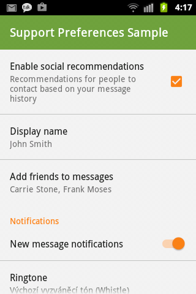
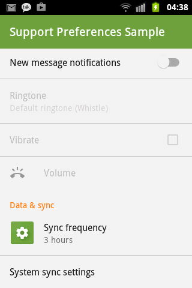
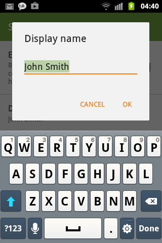
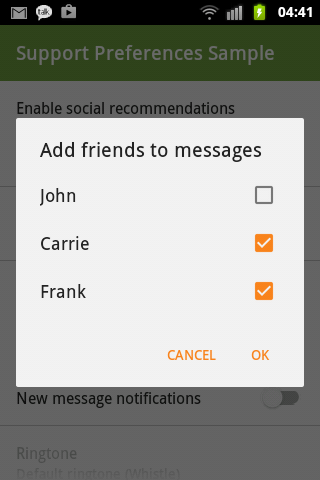
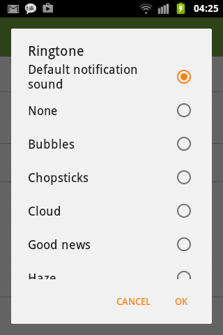
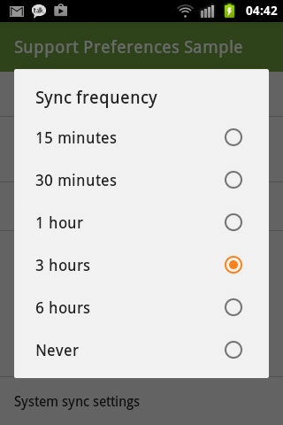
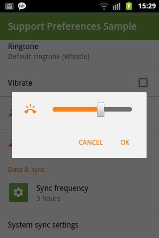
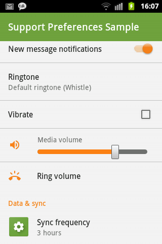

Material Preference
Material theme for preference widgets.
Backporting dat material look and functionality.
Available from API 7. Depends on appcompat-v7-r22.1.1.
Screenshots
All taken from an API 10 device.
       
Contents
PreferenceCheckBoxPreference-
SwitchPreference- Using
SwitchCompatavailable from API 7
- Using
-
DialogPreference- Uses AppCompat Alert Dialog Material theme
-
EditTextPreferenceextendsDialogPreference -
ListPreferenceextendsDialogPreference -
MultiSelectListPreferenceextendsDialogPreference- Now available from API 7
-
SeekBarDialogPreferenceextendsDialogPreference- Made public, appropriately tinted
SeekBar
- Made public, appropriately tinted
-
SeekBarPreference- Made public, appropriately tinted
Seekbar - According to http://www.google.com/design/spec/components/dialogs.html#dialogs-confirmation-dialogs
- Made public, appropriately tinted
-
RingtonePreference- Extracted Ringtone Picker Activity from AOSP
- Customizable AppCompat theme
-
AppCompatPreferenceActivity- Combines
PreferenceActivitywith appcompat-v7 theme and customPreferenceInflater
- Combines
PreferenceFragment- Combines
android.preference.PreferenceFragmentwith customPreferenceInflater
- Combines
-
SharedPreferencesCompat-
getStringSetandputStringSetmethods allow persisting string sets even before API 11
-
How to get the library?
dependencies {
compile 'net.xpece.android:support-preference:0.4.2'
}
How to use the library?
For now: Please read known issues at the bottom of this page and carefully examine the sample project.
Your preference activity or preference fragment should extend AppCompatPreferenceActivity
or custom PreferenceFragment respectively.
The theme used by this activity must extend one of
Theme.AppCompat.PreferenceTheme.AppCompat.Light.PreferenceTheme.AppCompat.Light.DarkActionBar.Preference
which you should customize further at least like so:
<style name="AppTheme.Preference" parent="Theme.AppCompat.Light.DarkActionBar.Preference">
<item name="colorPrimary">@color/primary</item>
<item name="colorPrimaryDark">@color/primary_dark</item>
<item name="colorAccent">@color/accent</item>
<item name="android:textColorHighlight">@color/text_highlight</item>
<item name="alertDialogTheme">@style/AppTheme.Dialog.Alert</item>
</style>
<style name="AppTheme.Dialog.Alert" parent="Theme.AppCompat.Light.Dialog.Alert">
<item name="colorPrimary">@color/primary</item>
<item name="colorPrimaryDark">@color/primary_dark</item>
<item name="colorAccent">@color/accent</item>
<item name="android:textColorHighlight">@color/text_highlight</item>
</style>
If you'll be using custom RingtonePreference your app needs to request
the android.permission.READ_EXTERNAL_STORAGE permission in its
manifest. If for some reason you cannot do this, use android.preference.RingtonePreference
which will use the system dialog.
If you won't be extending AppCompatPreferenceActivity, you'll need to
specify all preferences in XML by their fully qualified class name.
Changelog
0.4.2
-
SeekBartinting can be turned off viaapp:asp_tintSeekBar="false" - Introduced missing
seekBarDialogPreferencestyle
0.4.1
- Ringtone picker strings are now taken dynamically from
androidandcom.android.providers.mediapackages, falls back to English- These are accessible via
RingtonePickerActivity.get*String(Context)
- These are accessible via
0.4.0
- NEW! Implemented SeekBarPreference according to http://www.google.com/design/spec/components/dialogs.html#dialogs-confirmation-dialogs
- FIXED: tinting/padding in DialogPreference and SeekBarDialogPreference
- AppCompatPreferenceActivity and PreferenceFragment now implement Factory
- NEW! app:asp_dialogIconPaddingEnabled attribute
0.3.0
- Removed
MultiCheckPreferenceas it was only partially implemented andMultiSelectListPreferenceprovides the same function. -
MultiSelectListPreferenceis now available since API 7 (formerly API 11). UsesJSONArrayto persistSet<String>. - API for persisting and accessing string sets since API 7 is available via
SharedPreferencesCompat. -
Preferences now supportapp:asp_iconPaddingEnabledattribute which allows to better align non-launcher icons to 16dp keyline. - Custom preferences are now recycled which fixed animation issues on Lollipop.
- Custom preferences are now always inflated on all platforms if using
AppCompatPreferenceActivityand/or customPreferenceFragment. - Library no longer includes
android.permission.READ_EXTERNAL_STORAGEpermission (used to read ringtones). You have to do it yourself.- This is needed because the custom picker is part of the app and not provided by system.
- You are of course free to use
android.preference.RingtonePreferencewhen necessary.
0.2.2
- optional tinting via
app:asp_tintIcon="true"andapp:asp_tintDialogIcon="true"andasp_tintandasp_tintMode.
0.2.1
- No need for
net.xpece.android.support.preference.prefix in XML files defining preferences, framework will choose automatically:On Lollipop nativePreference,CheckBoxPreference,SwitchPreferencewill be used.Otherwise support version will be used.Force either version by using fully qualified class name.- You need to use
AppCompatPreferenceActivityor specialPreferenceFragmentboth of which are provided.
AddedPreferenceCompat#setChecked(Preference, boolean)helper method.
0.1.2
- Czech strings
-
SeekBarinSeekBarDialogActivityusesColorFilterto match theme
0.1.1
- Initial release
- Backported material style and icon capability for
Preferencechildren - Backported
SwitchPreference - Material styled
RingtonePreferencepicker dialog/activity
Work TBD
- Look into styling multi-pane header preferences
Known issues
- Doesn't work well with fragment headers. Use simple preference layout as much as possible.
- Multilingual strings for Ringtone picker activity are not pulled yet.
If you want Holo seek bar on Gingerbread, copy necessary resources from SDK to your
project, define
custom Widget.Something.SeekBar style and override android:seekBarStyle
in your theme appropriately.